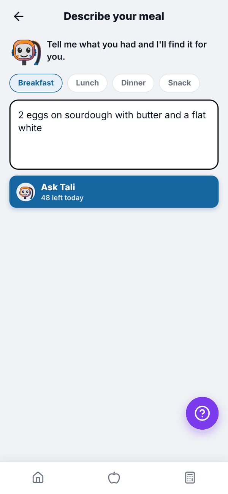
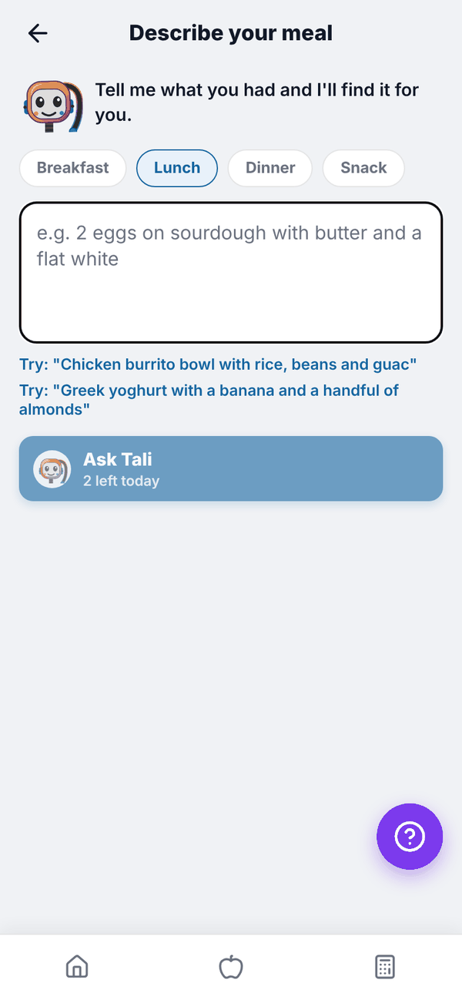
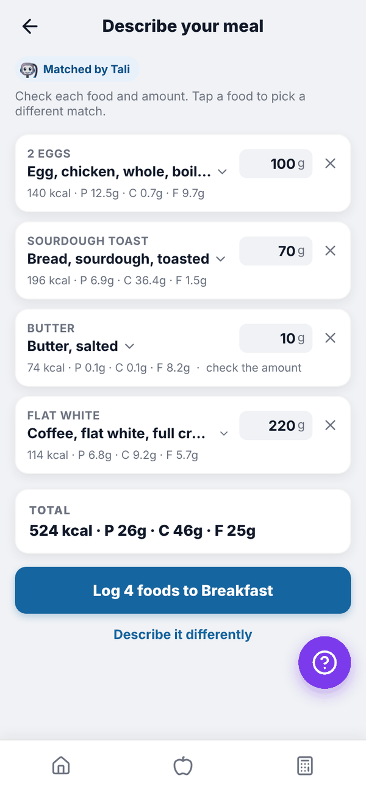
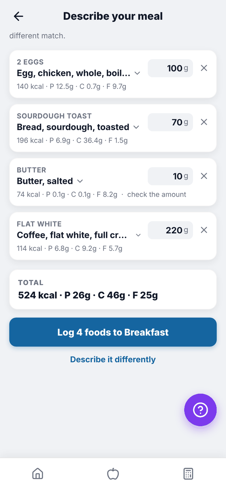

Totality Nutrition guide
Tell Tali what you ate
Describe a meal in plain words and Tali finds the foods and amounts for you to check, with the daily limits for each plan.
Instead of searching for each food, type what you ate the way you'd say it, like "2 eggs on sourdough with butter and a flat white". Tali splits it into foods and amounts, matches each one to the food database, and you check it before anything is logged.
Telling Tali never uses credits, but there's a daily limit:
| Plan | Meals described per day |
|---|---|
| Free | 3 |
| Nutrition Paid | 3 |
| Trial | 5 |
| Nutrition + AI Paid | 50 |
The day resets at midnight, Sydney time.
Describe a meal#
- Tap Tell Tali what you ate on Home, or Describe your meal to Tali in Add food.
- Pick the meal: Breakfast, Lunch, Dinner or Snack.
- Type what you ate, up to 500 characters. With the box empty you can tap one of the "Try:" examples.
- Tap Ask Tali. The button shows how many you have left today, for example "48 left today".


Check and log#
Tali shows each food with the amount in grams. The calories and macros always come from the food database, never from the AI.
- Tap a food's name to pick a different match from the list, or type in the search box under it and tap Search.
- Change the grams in the box on the right.
- Tap the x to remove a food.
- "check the amount" means Tali wasn't sure of the portion.
- TOTAL shows the whole meal.
Tap Log 4 foods to Breakfast (the number and meal match yours). You go back to your food log. Tap Describe it differently to start again.


If a food shows "No match, tap to choose" or has no amount, it won't be logged. A red note tells you how many will be skipped.
Questions#
I've hit today's limit.
You'll see "You've reached today's limit of 3 meals described to Tali." Search or scan as normal, or come back tomorrow. Nutrition + AI allows 50 a day.
Does describing a meal use my AI credits?
No. It's counted separately with the daily limit above.
Tali picked the wrong food.
Tap the food name and choose another match, or search for the right one in the box under it.
Can Tali see my photos or voice?
No. Tell Tali works from what you type.